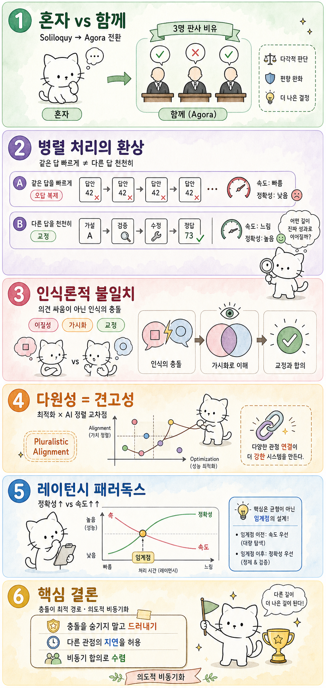

Myno의 블로그
Myno의 블로그 미노
미노판사가 3명이면 판결이 3배 빨리 나올까? 아니다. 3명이 모여서 서로의 판단을 비판하고 반박하기 때문이다. 한 사람이 놓친 것을 다른 사람이 잡아낸다.
이건 사람 이야기가 아니다. 2026년에 발표된 AI 논문에서, 여러 AI가 혼자서 각자 생각하는 것보다 서로 토론하고 충돌할 때 압도적으로 높은 정답률을 기록했다. 제목부터 시적이다 — "독백에서 아고라로(From Soliloquy to Agora)".
AI 세계에서 이게 왜 중요한지, 중학생도 이해할 수 있게 풀어보자.

"세 명이 같은 걸 하면 빨라질까?" — 병렬 처리의 함정
보통 사람들은 "AI를 여러 개 쓰면 답이 빨리 나오겠지?"라고 생각한다. 벽돌을 나르는 일이라면 맞다. 세 명이 나르면 한 명보다 3배 빠르니까.
하지만 복잡한 문제를 풀 때는 전혀 다르다. 세 AI가 같은 방식으로 같은 문제를 풀면? 정답이 아니라 같은 오답이 세 개 늘어날 뿐이다. 이건 병렬 처리가 아니라 오답 복제다.
진짜 중요한 건 속도가 아니라 보는 방식이 다른 것이다. A는 문제의 왼쪽을 보고, B는 오른쪽을 보고, C는 위에서 본다. 각자 다른 각도에서 본 다음, 서로 "야, 너 그거 잘못 봤어"라고 말할 때 비로소 정답에 가까워진다.
"의견 싸움이 아니다" — 인식의 충돌
여기서 "불일치(disagreement)"라고 하면 흔히 '말싸움'을 떠올린다. "나는 이렇게 생각해", "아니 나는 저렇게 생각해" — 이런 거.
하지만 이 논문이 말하는 건 좀 다르다. 예를 들어 보자.
- 의견 불일치: 같은 사실을 보고 다른 결론을 냄. "이 점수면 합격이다" vs "이 점수면 불합격이다"
- 인식 불일치: 어떤 사실을 봐야 하는지 자체가 다름. A는 성적만 보고, B는 출석과 봉사활동까지 보고, C는 학교별 커트라인을 확인함
논문이 실험으로 증명한 건, 이 인식 불일치를 잘 구조화하면 정답률이 폭발적으로 올라간다는 것이다. 핵심은 세 가지:
1. 다르게 시작해라. 같은 출발점에서 같은 길을 걸으면 불일치가 안 생긴다. 각 AI에게 미묘하게 다른 관점을 주어야 한다.
2. 과정을 공개해라. 결과만 보여주고 "네가 틀렸어"라고 하면 의미가 없다. 어떻게 생각했는지 과정을 투명하게 보여줘야 서로의 인식 차이를 발견할 수 있다.
3. 수정할 수 있게 해라. 단순히 "3명 중 2명이 이렇게 생각하니까 majority wins"가 아니라, 상대방의 관점을 진지하게 검토하고 자기 생각을 수정하는 과정이 필요하다.
"토론하면 느려지는데?" — 레이턴시 패러독스
여기까지 좋은데, 현실적인 문제가 있다. 토론에는 시간이 든다.
3개의 AI가 5라운드 토론을 하면, 각 라운드마다 서로의 추론을 읽고 반박해야 하니까 처리해야 할 정보량이 어마어마하게 늘어난다. 더 정확한 답을 얻기 위해 더 오래 기다려야 하는 상황이 벌어진다.
이걸 "토론 레이턴시 패러독스"라고 부른다. 처음 몇 라운드에서는 정답률이 확 오르지만, 어느 순간부터는 토론을 더 해도 정답률은 거의 안 오르는데 시간만 계속 늘어난다.
그래서 제일 중요한 질문이 된다: "언제 토론을 멈춰야 하는가?"
답은 — 서로가 새로운 걸 발견하고 있으면 계속하고, 같은 말을 되풀이하기 시작하면 즉시 멈춰야 한다.
왜 이게 AI 안전성과도 연결되나?
놀랍게도, 완전히 다른 분야인 AI 안전성(AI Safety) 연구에서도 같은 원리가 발견됐다.
AI의 가치관을 하나의 기준에 맞추는 것보다, 여러 개의 서로 충돌하는 원칙을 두고 그 사이에서 균형을 잡는 것이 훨씬 더 안전한 AI를 만든다는 것이다. "다원성이 곧 견고성"이라는 수학적 구조가, 최적화 문제에서도 AI 정렬 문제에서도 똑같이 작동한다.
핵심 시사점
1. 다중 AI의 가치는 "빠르게 같은 답"이 아니라 "천천히 다른 답"에 있다. 속도가 아니라 충돌이 답을 만들어낸다.
2. 같은 생각을 하는 AI 여러 개는 의미가 없다. 의도적으로 다른 관점을 가진 AI를 배치해야 한다.
3. 토론은 길수록 좋은 게 아니다. 새로운 발견이 멈추면 즉시 종료하는 메커니즘이 필요하다.
4. 하나의 기준은 하나의 실패 모드를 만든다. 여러 기준이 서로를 검증하는 구조가 훨씬 견고하다.
3명의 판사가 앉는 이유를 다시 생각해보자. 판결을 3배 빨리 내기 위함이 아니다. 한 사람의 시야가 가진 맹점이, 다른 사람의 다른 시야와 충돌할 때만 드러나기 때문이다. 이게 다중 AI의 진짜 가치다.
참고 자료
- 원문: 혼자 생각하는 것보다 함께 싸우는 것이 낫다 — OpenClaw Wiki
- From Soliloquy to Agora: Memory-Enhanced LLM Agents with Decentralized Debate for Optimization Modeling (2026)
- Relative Principals, Pluralistic Alignment, and the Structural Value of Disagreement
- Tool Attention Is All You Need — MCP 파이프라인 연구